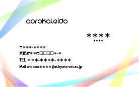

メディアリテラシー基礎
Session:1
イラストレーター
線一つ満足に引けない、形をなぞり方もよくわからない、「あんかー」なんだそれ？
初めて使ったときは上の様な状態だった気もします。
Session:2
名刺作り
自分の会社名を考えて、そこの名刺を作る。
僕は晴れて会社「ACROKALEID」の社長となりました。

ちなみに”ACRO"は先進的なとか、飛躍。
”KALEID"は万華鏡を意味します。
物事は見方を変えれば全く違うものに見える。
そのための視点を提供する。って感じかなと思ってます。
Session:3
Web制作
このページを公開する。
Html・CSS。どう見ても何かの暗号。
説明されたところで理解できる気がしない。
と思っていたのも束の間。
実際にVisual Studio Codeで色々といじってみると、思ってたより難しくないのでは、って思えてきた。
でも、今回は配布された型の様なものがあったし、自分で一から作っていくとなると、こうは行かないのかなとも思う。
この課題を通して、新しい可能性に気づくことができたと思う。
これはもう少し調べたりして、知識を付けたい。
プランニング基礎
Session:1
Where is it ?
ここはどこでしょう？
そこはどこか？僕は今どこにいるのか？
それをたった数枚の写真のみで表現する。

とりあえず、ということで撮ったこれらの写真。
僕の居場所には上ったり下ったりしなければ辿り着くことはできない。
実はこれらの写真、全て居場所で待っている僕目線だったりもする。
Session:2
Everything I Have
リモート授業で実際には、ほとんど会えないクラスメイト。
彼らは一体どんな人なのか？
その中の二人について各々の分析を元に紹介プレゼンを作成した。
ヤバイ人の目線から見た二人の紹介プレゼンは今、振り返って見ても、良い出来だったと思う。
慢心は禁物。
Session:3
サプライズ
前期を締めくくる集大成ともなる課題。
ターゲットを選び、サプライズを仕掛ける。
ターゲットとサプライズのオチが瞬く間に決まったのに反して、
そこに至る過程は前日の夜、当日の昼、まで決まらなかった。
ちなみに僕たちのチームがターゲットに選んだのは
この課題を与えた張本人でもある「中山和也」先生。

様々なアクシデント()に見舞われながらも、無事、成功させることができた。
ただ、彼には、
リアクションの達人からリアクションについて学んで欲しい。
（あまり人のことは言えないけど。）
プロトタイピング基礎
Session:1
レーザー加工
イラストレーターで書いた絵を元にレーザーで加工して切り出す。
オンラインでの実施でどうやるのかとも思っていたけど、割と簡単にできた。
インターネットは偉大。

第三案「ロケット」
元々は魚の頭だったり、宇宙船の脱出ポッドだったりもしたけれど、紆余曲折を経てロケットに。
この写真は我ながら良い出来だと思う。(作品より背景に目が行く気もするけど。)
後ろの時計は前に貰ったもの。可愛い。
Session:2
パラメトリックな設計-鳥居-
TinkerCADを使って鳥居の3Dモデルを作成。
直感的に立体を作っていけるのは楽しかった。
コードブロックを使うことで思いもよらない立体を作り出すこともできた。
あとはこれを提出して3Dプリンタで出力するだけのはずだったのだが、
こっちのミスでうまく提出できておらず、立体化はされなかった。
気づいた時は Σ(゜Д゜）ってなった。
提出の確認は大切。
Session:3
ドアオープナーの制作
コロナの影響で需要が増えたこの製品。
今度もイラストレーターで描いた図を元に機械で加工し、作った。

完成して届いたものを、ちょうど飲み終わったモンスターの上に載せて見た。
二つの三日月が交差している様なこのデザイン。色々試しているうちに生まれた偶然の産物だが、なかなか良い感じだと思っている。